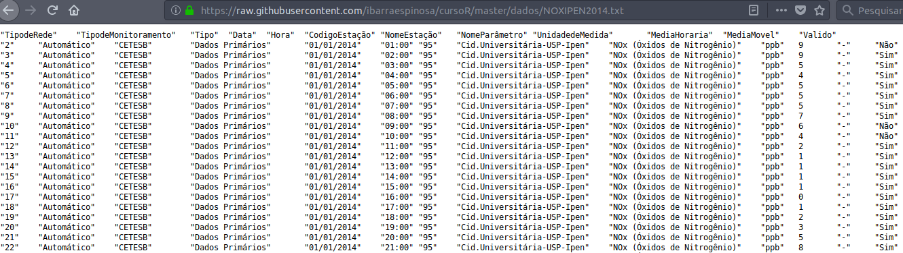
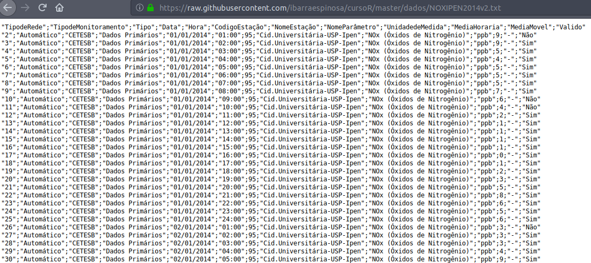

Capitulo 4 Importando e exportando dados em R
4.1 data-frames
Probabelmente um dos promeiros objetos que vamos usar quando começamos usar R. Pensa num data-frame como uma planilha de Libreoffice (o excel). Os data-frame pode ser criaos como foi visto na seção anterior. O principal, é que temos varias funções para ler data-frames no R, entre elas
- read.csv
- read.csv2
- read.table
Agora vamos a ler dados do repositorio usando read.table, mas primeiro vamos lembrar que se tu precisar ver a ajuda da função, tem que escrever no R ?read.table. Então, agora vamos ver os argumentos da função:
args(read.table)## function (file, header = FALSE, sep = "", quote = "\"'", dec = ".",
## numerals = c("allow.loss", "warn.loss", "no.loss"), row.names,
## col.names, as.is = !stringsAsFactors, na.strings = "NA",
## colClasses = NA, nrows = -1, skip = 0, check.names = TRUE,
## fill = !blank.lines.skip, strip.white = FALSE, blank.lines.skip = TRUE,
## comment.char = "#", allowEscapes = FALSE, flush = FALSE,
## stringsAsFactors = default.stringsAsFactors(), fileEncoding = "",
## encoding = "unknown", text, skipNul = FALSE)
## NULLAqui vem-se os valores default dos argumentos da função read.table. O terceiro argumento é sep, com valores por default = “”.
df <- read.table("https://raw.githubusercontent.com/ibarraespinosa/cursoR/master/dados/NOXIPEN2014.txt")Agora vamos usar a funções head and tail para ver as primeiras e as ultimas 6 linhas do data-frame.
head(df)## TipodeRede TipodeMonitoramento Tipo Data Hora
## 2 Automático CETESB Dados Primários 01/01/2014 01:00
## 3 Automático CETESB Dados Primários 01/01/2014 02:00
## 4 Automático CETESB Dados Primários 01/01/2014 03:00
## 5 Automático CETESB Dados Primários 01/01/2014 04:00
## 6 Automático CETESB Dados Primários 01/01/2014 05:00
## 7 Automático CETESB Dados Primários 01/01/2014 06:00
## CodigoEstação NomeEstação NomeParâmetro
## 2 95 Cid.Universitária-USP-Ipen NOx (Óxidos de Nitrogênio)
## 3 95 Cid.Universitária-USP-Ipen NOx (Óxidos de Nitrogênio)
## 4 95 Cid.Universitária-USP-Ipen NOx (Óxidos de Nitrogênio)
## 5 95 Cid.Universitária-USP-Ipen NOx (Óxidos de Nitrogênio)
## 6 95 Cid.Universitária-USP-Ipen NOx (Óxidos de Nitrogênio)
## 7 95 Cid.Universitária-USP-Ipen NOx (Óxidos de Nitrogênio)
## UnidadedeMedida MediaHoraria MediaMovel Valido
## 2 ppb 9 - Não
## 3 ppb 9 - Sim
## 4 ppb 5 - Sim
## 5 ppb 4 - Sim
## 6 ppb 5 - Sim
## 7 ppb 5 - Simtail(df)## TipodeRede TipodeMonitoramento Tipo Data Hora
## 8577 Automático CETESB Dados Primários 01/01/2015 19:00
## 8578 Automático CETESB Dados Primários 01/01/2015 20:00
## 8579 Automático CETESB Dados Primários 01/01/2015 21:00
## 8580 Automático CETESB Dados Primários 01/01/2015 22:00
## 8581 Automático CETESB Dados Primários 01/01/2015 23:00
## 8582 Automático CETESB Dados Primários 01/01/2015 24:00
## CodigoEstação NomeEstação NomeParâmetro
## 8577 95 Cid.Universitária-USP-Ipen NOx (Óxidos de Nitrogênio)
## 8578 95 Cid.Universitária-USP-Ipen NOx (Óxidos de Nitrogênio)
## 8579 95 Cid.Universitária-USP-Ipen NOx (Óxidos de Nitrogênio)
## 8580 95 Cid.Universitária-USP-Ipen NOx (Óxidos de Nitrogênio)
## 8581 95 Cid.Universitária-USP-Ipen NOx (Óxidos de Nitrogênio)
## 8582 95 Cid.Universitária-USP-Ipen NOx (Óxidos de Nitrogênio)
## UnidadedeMedida MediaHoraria MediaMovel Valido
## 8577 ppb 3 - Sim
## 8578 ppb 8 - Sim
## 8579 ppb 11 - Sim
## 8580 ppb 11 - Sim
## 8581 ppb 16 - Sim
## 8582 ppb NA - SimAgora vamos ler os mesmos dados com outro formato e testar e read.table funciona do mesmo jeito
df2 <- read.table("https://raw.githubusercontent.com/ibarraespinosa/cursoR/master/dados/NOXIPEN2014v2.txt")
# Error in scan(file = file, what = what, sep = sep, quote = quote, dec = dec, :
# linha 1 não tinha 6 elementosVemos a mensagem de error, mas o que quer dizer.
Se tu recever um banco de dados tipo .txt e quer abrir no R… ABRE ELE COM BLOCO DE NOTAS PRIMEIRO!!!
O primeiro arquivo:

O segundo arquivo é:

qual é a diferença?
Como vemos o segundo arquivo tem separação de “;”, entao, temos que lero arquivo assim:
df2 <- read.table("https://raw.githubusercontent.com/ibarraespinosa/cursoR/master/dados/NOXIPEN2014v2.txt", sep = ";")
head(df2)## TipodeRede TipodeMonitoramento Tipo Data Hora
## 2 Automático CETESB Dados Primários 01/01/2014 01:00
## 3 Automático CETESB Dados Primários 01/01/2014 02:00
## 4 Automático CETESB Dados Primários 01/01/2014 03:00
## 5 Automático CETESB Dados Primários 01/01/2014 04:00
## 6 Automático CETESB Dados Primários 01/01/2014 05:00
## 7 Automático CETESB Dados Primários 01/01/2014 06:00
## CodigoEstação NomeEstação NomeParâmetro
## 2 95 Cid.Universitária-USP-Ipen NOx (Óxidos de Nitrogênio)
## 3 95 Cid.Universitária-USP-Ipen NOx (Óxidos de Nitrogênio)
## 4 95 Cid.Universitária-USP-Ipen NOx (Óxidos de Nitrogênio)
## 5 95 Cid.Universitária-USP-Ipen NOx (Óxidos de Nitrogênio)
## 6 95 Cid.Universitária-USP-Ipen NOx (Óxidos de Nitrogênio)
## 7 95 Cid.Universitária-USP-Ipen NOx (Óxidos de Nitrogênio)
## UnidadedeMedida MediaHoraria MediaMovel Valido
## 2 ppb 9 - Não
## 3 ppb 9 - Sim
## 4 ppb 5 - Sim
## 5 ppb 4 - Sim
## 6 ppb 5 - Sim
## 7 ppb 5 - Simtail(df2)## TipodeRede TipodeMonitoramento Tipo Data Hora
## 8577 Automático CETESB Dados Primários 01/01/2015 19:00
## 8578 Automático CETESB Dados Primários 01/01/2015 20:00
## 8579 Automático CETESB Dados Primários 01/01/2015 21:00
## 8580 Automático CETESB Dados Primários 01/01/2015 22:00
## 8581 Automático CETESB Dados Primários 01/01/2015 23:00
## 8582 Automático CETESB Dados Primários 01/01/2015 24:00
## CodigoEstação NomeEstação NomeParâmetro
## 8577 95 Cid.Universitária-USP-Ipen NOx (Óxidos de Nitrogênio)
## 8578 95 Cid.Universitária-USP-Ipen NOx (Óxidos de Nitrogênio)
## 8579 95 Cid.Universitária-USP-Ipen NOx (Óxidos de Nitrogênio)
## 8580 95 Cid.Universitária-USP-Ipen NOx (Óxidos de Nitrogênio)
## 8581 95 Cid.Universitária-USP-Ipen NOx (Óxidos de Nitrogênio)
## 8582 95 Cid.Universitária-USP-Ipen NOx (Óxidos de Nitrogênio)
## UnidadedeMedida MediaHoraria MediaMovel Valido
## 8577 ppb 3 - Sim
## 8578 ppb 8 - Sim
## 8579 ppb 11 - Sim
## 8580 ppb 11 - Sim
## 8581 ppb 16 - Sim
## 8582 ppb NA - Sim4.2 data.table
data.table é um pacote que apresenta a classe data.table, que é como uma versão melhorada da classe data-frame O termo especifico é que data-table tem herencia (inherits) da classe data.frame